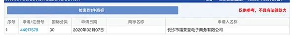
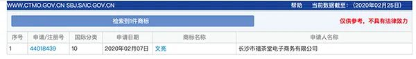

武汉封城日记｜第三十六天
原文链接 备份链接 我们距离真相更近一些了么？ 答案似乎是肯定的。 以财新为主的几家媒体，都在这几天刊发了回溯事件起源的调查报道，不止是一条线索指向有人为因素阻碍了上报程序的正常进行。 其中的几处重点我可以帮忙划一下： - 上海公共卫生中 …
澎湃新闻记者 邓雅菲
澎湃新闻查询发现，有商家在李文亮去世当天将李文亮的名字申请注册为商标。
2月7日凌晨，武汉市中心医院眼科医生李文亮在抗击新冠肺炎疫情工作中不幸感染，经全力抢救无效去世。
就在全社会沉浸在李文亮去世的悲痛中时，有商家却在此时抢注名称为“李文亮”的商标。天眼查数据显示，长沙市福茶堂电子商务有限公司共申请了72个商标，在2月7日，该公司申请了四个商标，其中三个名称为“李文亮”，另一个为“文亮”。

天眼查显示长沙市福茶堂电子商务有限公司申请商标截图。
这四个申请的商标的商标类型分别为医疗器械、医药、方便食品，在医疗器械这一类型下，该公司分别申请了“李文亮”、“文亮”两个商标。
澎湃新闻在国家知识产权局商标局网站查询发现，目前以上四个商标申请中，注册号为44017579、商标名称为“李文亮”的申请，目前申请状态为“此商标正等待受理”，但商标名称一栏显示为空。

国家知识产权局商标局网站查询截图。
另外，商标名称为“李文亮”、注册号分别为44015709、44013349的申请已检索不到；商标名称为“文亮”、注册号为44018439的申请状态为“此商标正等待受理”，商标名称一栏能正常显示。

国家知识产权局商标局网站查询截图。
天眼查数据显示，长沙市福茶堂电子商务有限公司的唯一法定代表人、股东是姜维才，公司注册资本为200万，注册时间是2019年5月16日。长沙市福茶堂电子商务有限公司经营范围是：在互联网从事以下经营活动:电子器材、电器机械及器材、保健用品、日用品、汽车内饰用品销售;家用电器及电子产品、化妆品及卫生用品、预包装食品、营养和保健食品、非酒精饮料及茶叶、散装食品、进口食品、箱包零售;电子产品组装;厨具、设备、餐具及日用器皿百货零售服务。
天眼查显示长沙市福茶堂电子商务有限公司信息截图。
2月13日，国家知识产权局商标局网站发布消息，为保障受疫情影响的当事人办理商标事务合法权益，商标审查部门主动研判，建言献策，参与起草了《国家知识产权局关于专利、商标、集成电路布图设计受疫情影响相关期限事项的公告》（第 350 号）和《国家知识产权局办公室关于新型冠状病毒感染肺炎疫情防控期间全面加强专利商标服务窗口业务管理的通知》。为依法打击可能发生的以病毒名、疾病名等与此次疫情防控相关名词、标志申请注册商标行为，审查部门加紧研究制定疫情防控期间的商标审查标准，严厉打击通过商标注册造谣、炒作等恶意注册行为。
戳这里进入
“全国新型冠状病毒感染病例实时地图”↓↓↓
本期编辑 邢潭
推荐阅读


原文链接 备份链接 我们距离真相更近一些了么？ 答案似乎是肯定的。 以财新为主的几家媒体，都在这几天刊发了回溯事件起源的调查报道，不止是一条线索指向有人为因素阻碍了上报程序的正常进行。 其中的几处重点我可以帮忙划一下： - 上海公共卫生中 …
原文链接 备份链接 自武汉封城以后，许多人冒着各种危险，将这座城市在疫情之下发生的事实与真相记录下来，外卖员张赛就是其中的一位。作为记录者，张赛也怀疑这些文字是否会像投入水里的一颗石子，掀不起多大涟漪。事实上，这些记录的意义不在于涟漪大 …
原文链接 备份链接 *************▲*************2020年2月8日，武汉中心医院后湖院区外墙上贴着李文亮的照片，地上摆满人们送来的鲜花。 （受访者供图/图） 全文共6660字，阅读大约需要14分钟。 “我觉得 …
原文链接 备份链接 从1月23日“封城”到元宵节，已经过去整整17天。即使我每天忙于记日记，也觉得时间过得很快啊。 过去我要早起，6点起床，7点到办公室，不堵车。现在则是天天睡到自然醒，有点提前退休的感觉。虽然我还有两年上班的时间。 …
原文链接 备份链接 *************▲*************（黎央/图） 全文共*775*字，文字阅读大约需要2分钟。 本文首发于南方周末 未经授权 不得转载 文 | 南方周末记者 李在磊 黎央 责任编辑 | …